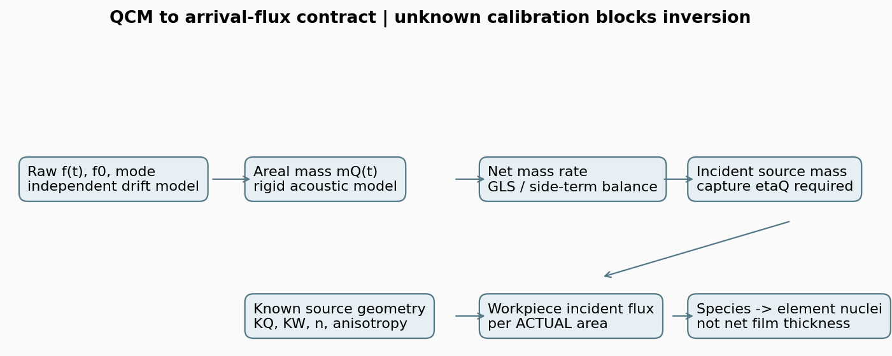

本地研究冻结；真实校准、重任务和设备验证未运行。没有生产tooling，没有ZIP，没有部署或上传。
直接阅读本包原创报告和原始代码。文献全文仅使用官方来源链接；没有声称附件包含未获取的论文原文。

# 01 原始频率到面质量：固定模型、符号和适用域
## 1 本轮代表体系与证据边界
选择Al源料→Al薄膜的非反应蒸发作为可复算主体。NIST有Al(g)原子物种条目、CIAAW有原子量，INFICON有晶控Al参数行，因此不必从未知复合氧化物配方猜主蒸气化学式。实际装料、加热源型、源温、容器、几何、氧分压、蒸气纯度、基片种类和捕集率均未知。示例的“纯Al原子、惰性平面样片”只是合成真值，不是测得的用户配方。[Al物种记录](https://webbook.nist.gov/cgi/cbook.cgi?ID=C7429905&Mask=1&Units=SI)，[CIAAW Al](https://www.ciaaw.org/aluminium.htm)
实现是离线研究内核，没有仪器通讯。选用SQM-160 074-511-P1-G §11理论关系作为明确来源，不宣称复现其固件输出。官方手册§10.4另有校准用公式与常数组；两者的差异及精确页定位见T05-R2-S01摘要。Lu–Lewis原论文出版入口本轮无法读取，有限负载式的直接证据是官方手册，而非假称完成论文全文核验。
## 2 定义与小负载推导
f0为所选裸晶基频，f是同模态、消除独立温漂估计后的有负载频率，单位Hz。定义Δf=f−f0，正质量增加对应Δf<0。石英密度ρq [kg/m³]，厚度剪切波频率常数Nq=f0 tq [Hz m]，特征剪切阻抗Zq=2ρqNq [kg m⁻² s⁻¹]。对刚性、均匀、牢固耦合的小面质量mA，附加载荷的一阶惯性近似给出
Δf = −2 f0² mA / Zq
mA = ρq Nq (f0−f) / f0²
单位核对：(kg/m³)(m/s)(1/s)/(1/s²)=kg/m²。它不需要膜密度；把它称“频率直接测厚”会漏掉后续密度假设。所有计算只接受基频；泛音必须重新定义基频与频移归一，不把n次泛音读数直接塞入f0。Sauerbrey原论文出版摘要只支持该比例关系的原始出处，全文未读，不从摘要扩展出通用薄膜阈值。[Sauerbrey 1959出版页](https://link.springer.com/article/10.1007/BF01337937)
## 3 有限负载声阻抗修正
均匀弹性膜的剪切特征阻抗为Zf=√(ρf Gf)，其中Gf是剪切模量。无损膜和自由表面边界下，声学传输包含tan(kf df)；加载层内相位不能再简单替换为kf df。消去传播相位得到这里采用的Z-match关系：
z = Zq/Zf = sqrt(ρq Gq/(ρf Gf))
x = π(f0−f)/f0
mA(f) = ρq Nq/(π f z) · atan[z tan(x)]
这是从手册厚度式乘ρf得到的面质量形式。z是无量纲阻抗比，不是膜密度；本式没有单独的ρf除法。z=1时mA=ρqNq(f0−f)/(f0 f)；在f→f0极限再退化到Sauerbrey。代码另给解析dmA/df并用中心差分自查。[SQM-160官方手册§11.1.3](https://www.inficon.com/media/4271/download/SQM-160-Multi-Film-Rate---Thickness-Monitor-Operating-Manual-(English).pdf?inline=true&language=en&v=4)
本实现固定§11常数组ρq=2649 kg/m³、Nq=1661 Hz m；不是其他厂家/晶体的默认标定值。主值支路只接受f0/2<f≤f0，防止atan/tan跨支路误反演。这是数学分支限制，不能理解成50%频移以内物理必然有效。仪器寿命阈值、晶体温度、模态跳变和材料性质须另行验证。手册某些材料的试验范围不作为通用验收门槛。
已加载晶片的一个时间窗必须计算mA(f_end)−mA(f_start)，或对整个mA(t)回归；不能把f_start冒充裸晶f0并重置声学负载。示例初始负载1e−5 kg/m²，频率零点/显示清零与物理裸晶状态不同。多层、非均匀膜不能无条件套单一均匀膜z；本轮没有多层传输线反演。
## 4 温漂、应力与粘弹性
观测模型是f_raw(t)=f_load(t)+b_T(t)+b_stress(t)+b_electronics(t)+ε(t)。单条f(t)不能把这些项分开。实现要求显式drift_hz输入；缺失即拒绝，零也必须有外部依据。合成例的已知漂移来自独立设定的空白真值，没有从目标厚度或沉积曲线反推漂移。真实记录至少需时间、晶片温度/冷却状态、源热事件、空白/参比频率或等价独立证据；温度系数不是凭一个温度点就可识别。
实数z修正解决不了任意软膜的耗散。粘弹膜G*(ω)为复数，负载阻抗ZL(ω)也受厚度、边界和外部介质影响，ZL不是材料特征阻抗Zf。需要频率及带宽/耗散、多泛音或独立力学数据才能约束更完整模型。QCM-D聚合物研究显示软化后频率/耗散及泛音行为变化，但该证据不提供真空Al膜的量值阈值。T05-R2-S05仅核对可访问索引片段，全文访问受限；本包不提供粘弹反演程序。
## 5 密度的四个角色
- 源料块材/装填密度：源体积、料位与称量，不能直接当沉积膜密度
- 实际QCM膜密度ρQfilm：把QCM面质量转成QCM法向几何厚度，受孔隙/组成影响
- 实际工件膜密度ρWfilm：把工件净留存质量转厚度，未必等于ρQfilm
- 控制器density setting：显示算法的输入，可能是表值或经验标定值，必须保存其来源
所谓“声学密度”若指动态有效密度，只能作为明确声学本构的一部分，与G*(ω)、孔隙和耦合质量共同定义；不能自由调它以补偿未测膜密度。当前z是独立输入并保留待标定状态。密度和z在理论材料模型中可能相关，不默认其不确定度独立。原始频率→面质量路径不使用tooling或density setting，测试专门改变display density验证输出不变。
# 02 从晶体净质量到工件入射元素通量
本章所有几何与元素守恒推导为本库原创。接口继承T05首轮的“遮挡前半球总质量率Q [kg/s]、接收面实际面积通量j [kg m⁻² s⁻¹]”定义，保留T02误差分类，不修改上游代码。
## 1 晶体净负载不是到达量
单源、已知源物种混合的简化质量账为
yQ = d(mAQ)/dt = ηQ jQ_source + jQ_reaction_retained − jQ_outgoing
jQ_source = (yQ − jQ_reaction_retained + jQ_outgoing)/ηQ
ηQ是源来料在QCM上的质量加权净捕集比例（本模型0<ηQ≤1），不是工件留存比例。反应气摄入与脱附/溅射单列；负净率可能是真损失或未校正漂移，不能取绝对值后称入射通量。一般多组分需Σs ηQs ms ΦQs，单个标量ηQ只有组成与组分捕集已知时才有物理意义。各项不可辨识时，代码只允许按已声明假设计算，实际模板保持blocked。
rate_from_frequency对mAQ(t)作中心化GLS直线拟合，返回窗口平均净质量率，单位kg m⁻² s⁻¹。线性窗内速率不恒定时残差仅为诊断，不能代表瞬时响应；滤波延迟、时钟偏移必须作为time误差保留。频率协方差经dm/df传播；不能把共享温漂当每个采样点独立噪声。合同在有σ时用SNR>5作为该反演的分析门控，低信号需另建删失/净量模型，这不是生产容差。
## 2 归一化各向源与接收几何
本轮实现已知点源的扩展角律。u是源至接收点单位向量，μs=ns·u，μi=ni·(−u)，r为距离。源坐标系的ux,uy沿两个已知正交横轴，令h=ux²−uy²。定义
f(Ω;n,a)=(n+1)/(2π) μs^n (1+a h), μs>0
n≥0, |a|<1；背面为0
Kx=f μi+ V/r², jx=Q Kx
f单位sr⁻¹；n控制极角集中，a控制方位不对称且在极轴连续为零。φ积分使h项为零，故半球积分为1；没有把遮挡损失重新归一化。V∈[0,1]必须来自已知几何或独立观测。接收投影只乘一次。K [m⁻²]与T02同义：射线立体角为μi dAx/r²，Ax必须是真实表面积，不是投影面积。
T05首轮的扩展源节点可概念上推广K=Σk wk fk μik Vk/rk²，wk≥0、Σwk=1；本包不重复实现源面/运动积分。它只输出已知点源场景的接口及shape参数，不能把n、a解释成源温、束斑半径或坩埚几何的唯一测量。实际有限源、碰撞和口沿未知时应升级模型，不能提高n拟合精度后声称这些问题消失。
工件入射质量通量为jW=jQ_source KW/KQ，源总质量率Q=jQ_source/KQ。若KQ=0，拒绝除法；若VQ未知，不把低读数当源衰减。比例法消去Q不等于消去n、a、源位置和遮挡。完整遮挡给零信息，而非“源停止”的证据。
## 3 tool factor的含义与禁用边界
在同一单物种、无反应/脱附、固定几何且真实膜密度已知时，可推导物理厚度比
hW/hQ = (ηW/ηQ)(ρQfilm/ρWfilm)(KW/KQ)
这是条件性推导，不给任何本机默认数值。控制器tooling百分比的定义及其初始设置需依型号手册；校准应保存同次工件独立实测厚度、晶控显示与原设定。QCM读数已包含tooling时不得再次乘。原始频率路径绕开显示混合参数，但仍必须有ηQ与K的外部依据；不能凭“原始数据”获得不存在的可辨识性。
本包的actual_unknown.json中tooling=null。合成例也不输出生产tooling；示例两种实际膜密度值只是为区分字段，未用于入射通量计算。相关操作定义见[INFICON手册§10](https://www.inficon.com/media/4271/download/SQM-160-Multi-Film-Rate---Thickness-Monitor-Operating-Manual-(English).pdf?inline=true&language=en&v=4)。
## 4 粒子、化学式单元、原子/核数
对物种s显式给出νes，即每个粒子所含元素e的核数；不根据源料名称猜蒸气物种。ms=Σe νes Me/NA，Φs为particles m⁻² s⁻¹。于是
Fe=Σs νes Φs [atoms m⁻² s⁻¹]
j=Σs ms Φs [kg m⁻² s⁻¹]
代码的number_fractions按粒子数归一；若输入是质量分数必须先转换，不能同名混用。Al单原子和Al₂团簇中一个粒子分别含1与2个Al核；同样Al质量通量得到同样Al核通量，但粒子数通量不同。团簇组分还可有不同角分布/捕集率，本轮混合例只在同一个局部点做代数守恒，不假设所有组分共享真实空间谱。
Al₂O₃固相的一化学式单元有5个原子，不意味着蒸气中存在一个Al₂O₃分子，也不意味着入射粒子数等于固相式单元数。反应演示输入2e19 Al atoms/m²/s与1.5e19 O₂ molecules/m²/s，在各自100%留存的合成条件下得到Al:O=2:3、总核数5e19；保留氧来自反应气的质量，不允许用ηAl>1藏掉增重。实际是否形成Al₂O₃、形成速率及膜密度仍未解。
gas_impingement采用理想平衡气体单面通量Φ=p/√(2πm kBT)。它只给背景分压和温度已知时的撞击率，不等于化学反应摄入。O₂每个分子2个O核；复合离子的电荷数不改变核数。实现原子量的Al取CIAAW，O=15.999 g/mol只是示例常用值，不用来做同位素精密计量。
## 5 T04机器输入合同
qcm_flux.schema.json严格关闭未声明字段；每个数值带value、unit、status、source。unknown必须null；实际记录禁止assumed_synthetic冒充校准。未知源位置/法向/视线、捕集率、角谱、漂移或气相组成都阻断实际反演。
contract.py输出workpiece_arrival[i].element_flux_atoms_m2_s，以及粒子口径、kg/m²/s、每真实工件面积和窗口归一说明。交给T04的是入射Fe，不是Nnet、厚度、n/k、应力或良率。T04需另外结合工件η、反应摄入、脱附、离子溅射与库存：
dNe_net/dt = Σs ηWs νes ΦWs + R_e − L_e − sputter_e
要在时间上积分至atoms/m²才能与T04库存对接；本包验证driver也积分入射质量，不擅自变成净膜厚。T03当前非负贡献优化器不能直接接受净侵蚀，T02完整oracle仍partial，点12离子参考/重任务设备验证未运行、tau非严格条件包络，这些状态均原样保留。
# 03 有界识别与不确定度
## 1 哪些参数能够由数据分开
对已知几何、已知可见性、正信号写log y_i=logQ+logη_i+logKi(n,a)。对β=[logQ,n,a]，雅可比一行为
[1, 1/(n+1)+log μs,i, h_i/(1+a h_i)]
若再拟合共同η，则加一列1。所有QCM行的logQ与logη列相同；增加同类测点只能识别Qη。独立源量测若确实测到了同一Q（遮挡前、有效沉积组分、同步窗口），增加一行[1,0,0,0]才能分开尺度。总称量包含飞溅/放气而未分账，不合格为这一独立Q。若每个监视点都给一个自由η_i，又会增加未知量，不能套共同η案例的满秩结论。
一个QCM只给一行。轴上h=0、μs=1，Q(n+1)可互相抵消；用同一个轴向上的不同距离不增加形状方向。方位全相同或θ很窄可能结构/实际病态；需角度与方位真正多样。`rank_report`同时给行/列、归一化奇异值、条件数；条件数依参数尺度，本包只比较同一参数化，不给通用合格数。
合成6监视点：已知捕集率时3参数秩3；共同未知捕集率时4参数秩3；加独立Q观测后秩4。单点为1/3。代码检测到秩亏即抛错，不通过先验边界假装所有参数已由测量识别。列满秩只是局部必要条件，不是证明未知复杂源的全局唯一性。
## 2 有界稳健拟合
fit_source联合拟合logQ、n、a；可选logη。默认Q范围1e−12…1e−2 kg/s、n=0…12、a=−0.95…0.95、η=0.05…1。这些是示例算法搜索域，不是生产范围或材料先验。传入真实研究时必须重新根据外部证据定界并记录来源。使用scipy least_squares的soft_l1损失以降低孤立异常值影响；所有输入必须正且可见，不把零值floor为小数后继续对数拟合。
目标为Σρ((log y_pred−log y_obs)/σlog)²意义的稳健代价。实现保存残差、活动边界、收敛标记与秩。这里σlog是已知测量标准差，不能一边调σ一边宣布χ²变好。小噪声时σlog≈σy/y；接近零或净损失时不能用这一近似。
协方差只在linear损失、内部解、满秩时给(JᵀJ)⁻¹，且以已知σ归一，不用残差随意缩小；边界与稳健解返回null，交由profile/重采样处理。重任务driver已实现重复噪声采样、联合时序、多工位保留预测与经验分位；当前仅跑极小验证，不以1次重复得到的分位区间称统计覆盖。
## 3 相关不确定度传播
频率层：Cf包括原始噪声和漂移估计误差及交叉协方差。Cm≈Dm Cf Dmᵀ，Dm为逐点dm/df。GLS在m(t)=b+yt上回归，保留斜率单位。共同f0与z不确定度、热模型系统误差不在这项斜率随机σ内，须作为共享输入再传播。
工件层：g(θ)=(y−r+o)KW/(η KQ)。一阶Cout=J Cθ Jᵀ；代码接受PSD相关矩阵，拒绝非对称/非PSD，数值微分可给不同单位的显式scale。近边界、分母近零或宽分布不能把这个局部线性结果视为覆盖保证，应使用有物理支持的联合情景/Monte Carlo或阻断。代码不会为了运行而给未知量正态分布。
合成θ=[log yQ,logηQ,n,a]输入标准差[0.02,0.03,0.12,0.04]，前两项相关系数0.5，算得一个保留位置的Al入射通量约2.29305e19 atoms/m²/s、局部σ约9.73149e17。二者皆为声明的合成参数条件下结果，不含真实geometry或model误差；演示正相关在比值中部分抵消，不把这种抵消假定用于真实数据。
## 4 七轴误差分类
| 类别 | 待记录项 | 不得吸收为 |
|---|---|---|
| source | Q(t)、n/a、料位/束斑、源组分，及其联合变化 | 任意单一tooling百分比 |
| time | 晶控时标/滤波/挡板延迟、窗口积分、热漂移时间结构 | 独立白噪声 |
| space | QCM敏感度权重、晶片有限面积、样片实际面积、局部遮挡 | 单点几何真值 |
| geometry | 三维位置、法向、源有限尺寸、口沿与运动版本 | 源指数n |
| kernel | 离散求积、角谱参数化、自由分子近似及接口归一 | 密度修正 |
| input | 模态/f0、校准z、原子量、捕集率、分压、已知协方差 | 来源未明常数 |
| model | 粘弹、应力、碰撞、反应/再蒸发、多层声学和未建模源状态 | 统计拟合置信区间 |
这七轴保留独立记录；存在相关时传联合协方差/情景，不把各轴总百分比直接平方相加。总不确定度仍unknown不妨碍单独审计解析和数值误差，但禁止输出生产精度。
## 5 实际辨识需要的输入（只做设计，不安排实验）
先获取裸晶/加载模式与机型版本、温漂参比、几何/可见性；再用多角度/多方位监视点约束形状。若要求总有效源率而非Qη，需独立质量/物种流量及有效损失分账；若要求工件厚度，另测实际工件密度/成分和ηW。按批次、料位、压力和时段留出，不能把同一目标厚度既当校准输入又当验证真值。
重任务执行前还需要资源额度、实际数据适用域和分阶段验收条件。当前没有采样用户计算设备、操控镀膜机、外部API或付费动作。
# 04 轻量结果、复算与未运行项
## 1 必要的小测
verification/diagnostics.json冻结了完整合成计算。已知真值Q=2e−6 kg/s、n=2.4、a=0.25、ηQ=0.92，经原始频率面质量链恢复Q的相对误差约1e−12（双精度与求根误差级，不是物理精度）。两个保留工件位置入射质量通量为3.00626e−6与1.61838e−6 kg/m²/s，对应Al核通量6.70982e19与3.61214e19 atoms/m²/s。密度/tooling均未进入计算。
验证分开为：解析极限/单位与守恒、严格合同QA、声明合成真值恢复、故意违反假设的反例。60项轻量测试通过，其中7项来自一次独立窄量纲核查。模型指定的完整Seed/Sol审查链没有运行，不能据此宣称算法已获完整独审签署。
## 2 已实现的可证伪反例
- 单轴上QCM：Q=2e−6,n=1与Q=1e−6,n=3信号完全相同，45°处入射通量比为0.5。证明总率与角谱未由一个读数分离
- 捕集率混淆：6监视点对[logQ,n,a,logη]仍秩3；真正独立源量测才能在示例中提升至4
- 漂移：真实净率1e−8 kg/m²/s、未校正漂移+2 Hz/s，误推净率约−2.30824e−7；正确移除外部漂移后恢复真值。负率不取绝对值变蒸发
- 遮挡：传感器V=0.2却按V=1解释会把总源率估成20%；V=0直接拒绝反演。多点稳健损失可减轻孤立坏点，但不能识别所有共同遮挡
- 离群：一个读数乘1.5，soft_l1给Q≈1.98629e−6,n≈2.45992,a≈0.24304；普通线性损失给Q≈1.83491e−6,n≈3.44677,a≈0.12947。不是宣称稳健方法对任何污染都有保证
- 有限负载：z=1的精确周期关系、f→f0小负载极限、非零初始加载下的斜率都独立测试；跨数学分支、非基频、非刚性输入拒绝
- Al₂团簇与O₂反应：粒子数和核数分别累加，质量守恒；外部氧增重不被藏入ηAl>1
## 3 重任务完整程序与默认计划
models/validation_driver.py默认mode=plan，仅计算资源计划。已写出连续多窗口、累计晶体负载、同一时窗多监视点、原始频率噪声/漂移生成、mass→rate反演、有界拟合、空间保留位置及时间积分、已知真值偏差、参数覆盖诊断和重复分位统计。它不依赖实机或外部API。
计划为1000重复×120窗口×4情景=480000次拟合，12监视点×11时点约63360000个频率样本。按明确未实测的每窗口0.02…2 CPU秒预算，单核约2.67…266.67小时；64 MB内存底额加算法数据，检查点磁盘约960 MB。不是设备实测，也没有预留或购买资源。不同机器、BLAS、失败重试和文件系统可显著改变实际耗时。
每个case/replicate单独原子写检查点，RNG种子由base seed、replicate、case确定。resume只接受完成标记且配置及qcm_flux/driver源代码联合哈希相同的文件；配置变更明确报错，禁止静默混用。最终输出按时间窗口的[Q,n,a]经验分位和保留点累计质量误差。轻量模式只有1重复、3窗口、8监视点；其分位相同是样本数为1的必然结果，不能称95%覆盖。
本轮只运行light，四情景12个窗口拟合完成。名义保留通量最大相对误差约0.0160%，相关漂移情景约0.5703%；这些值来自人为0.05Hz噪声、0.08Hz/s漂移残差模型。遮挡/孤立离群情景的稳健拟合没有放大成大面积失真，但这只是当前布点与污染比例的合成反例，不是实机稳定性证书。
heavy需要同时--mode heavy、--execute、--acknowledge-synthetic-only和显式输出目录。当前heavy_validation=not_run、device_validation=not_run、actual_calibration=not_run；这三个状态相互独立。
## 4 复现方法
Python 3.10+；numpy、scipy、jsonschema；只有重建图需matplotlib。已装环境版本记录在verification/environment.json。无需安装软件、联网或访问原论文。
python models/contract.py examples/synthetic_al.json
python models/contract.py examples/actual_unknown.json
python -m unittest discover -s tests -v
python models/diagnostics.py
python models/data_qa.py
python models/validation_driver.py
python models/validation_driver.py --mode light --output /tmp/t05_light_new
python models/reader.py --directory .
运行写文件的重建脚本会更新verification载荷，冻结后应先复制本目录再做实验；reader只读本目录，在独立临时副本复算，不触碰冻结输出。reader拒绝额外/缺失/修改载荷、路径穿越与符号链接，检查所有载荷字节数和SHA256。ZIP不创建；index.html直接阅读本包原创报告和原始代码，来源全文使用官方链接，未取得/未授权再分发的原文不藏在reader中。
## 5 状态与边界
状态implementation_ready_validation_pending，本地冻结。未更改首轮/前轮、root STATE或产品，未push/上传。本轮没有用户设备采样、真实沉积操作、外部计算API调用或付费。实际工具因子、晶体/工件捕集率、角谱参数、几何与膜密度全部待测；无法据本包直接生成生产配方、均匀性验收或光谱预测。
来源资料有访问等级：两本官方手册核读、Sauerbrey仅出版摘要、Lu–Lewis全文/出版页未可读、QCM-D原研究仅索引可读内容，标准数据官方页面已读。证据缺口明确保留，不以二手摘要冒充全文。
完整性复算：python models/reader.py --directory .